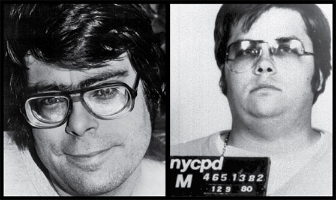

<!DOCTYPE html>
  <html>
    <head>
      <link type="text/css" rel="stylesheet" href="stylesheet.css"/>
      <link type="image/png" rel="icon"  href="cta.png">
    <title>STEPHEN KING KILLED JOHN LENNON/title>
  </head>
<body link="white">
   <header>
    <div class="nav">
      <ul>
        <li class="home"><a href="../index.html">HOME/</a></li>
        <li class="index"><a href="../list.html">INDEX/</a></li>
        <li class="about"><a href="../aboutpage/about.html">ABOUT/</a></li>
      </ul>
    </div>
  </header>
  <center></center>
  <p class="about1">This one’s pretty far-fetched because there were witnesses to Lennon’s murder, but some hardcore believers of this theory say Richard Nixon and Ronald Reagan secretly communicated to the writer through magazines, giving him orders to kill Lennon.</p>
</body>
</html>
